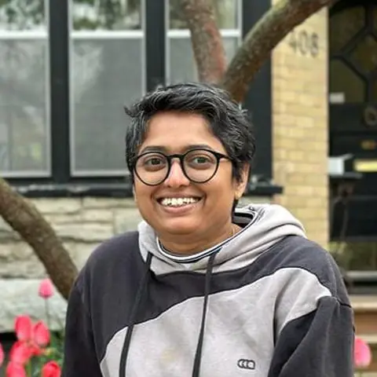

Shanmugapriya T.
Shanmugapriya T. is an Assistant Professor (Digital Humanities) in the Department of Humanities and Social Sciences, Indian Institute of Technology (Indian School of Mines) Dhanbad. She was a Postdoctoral Scholar at the Department of Historical and Cultural Studies, University of Toronto Scarborough, Canada, from 2022 to 2024, and an AHRC Postdoctoral Research Associate at Lancaster University, UK, from 2020 to 2021. She was a SPARC Visiting Researcher and a British Academy Visiting Fellow at the Department of History, Lancaster University, in 2019 and 2025.
Her research and teaching interests have an interdisciplinary focus on digital humanities, digital environmental humanities and digital literature. Shanmu earned her Ph.D. in Indian English Literature and Digital Humanities at the Indian Institute of Technology Indore, India. She currently serves as Secretary of DHARTI and as a member of the Board of Directors of the Electronic Literature Organization.